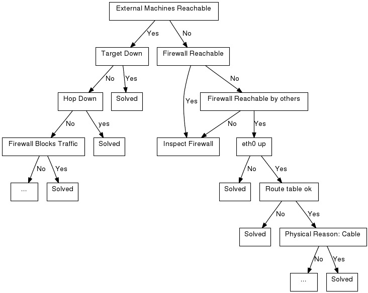

Troubleshooting network issues (205.3)
Troubleshooting network issues (205.3)¶
Candidates should be able to identify and correct common network setup issues, to include knowledge of locations for basic configuration files and commands.
Key Knowledge Areas¶
-
Location and content of access restriction files
-
Utilities to configure and manipulate ethernet network interfaces
-
Utilities to manage routing tables
-
Utilities to list network states
-
Utilities to gain information about the network configuration
-
Methods of information about the recognised and used hardware devices
-
System initialisation files and their contents (Systemd and SysV init process)
-
Awareness of NetworkManager and its impact on network configuration
Terms and Utilities¶
-
ip -
ifconfig -
route -
ss -
netstat -
/etc/network/,/etc/sysconfig/network-scripts -
ping,ping6 -
traceroute,traceroute6 -
mtr -
hostname -
System log files such as
/var/log/syslog&/var/log/messages -
dmesg -
/etc/resolv.conf -
/etc/hosts -
/etc/hostname,/etc/HOSTNAME -
/etc/hosts.allow,/etc/hosts.deny
Introduction to network troubleshooting¶
It would be great if you would be able to open up a book and find an index there of all possible network problems and their solutions. But in practice that is impossible. There are way too many scenarios to describe and new technologies are surfacing constantly, creating new options - and new problems. However, almost every problem can be solved by applying knowledge and logic. In the case of network troubleshooting, this means mostly that you should determine how traffic should flow from source to destination and back, and checking step by step if you can see the traffic passing by using the tools described earlier. Also, make sure to check traffic in both directions if possible, as many network problems stem from the fact that traffic from source to destination may not be following the same path as traffic the other way around.
Key files, terms and utilities have already been described in ??? and other chapters. In this chapter we focus on the problem solving process and introduce a number of additional techniques, utilities and key files.
An example situation¶
You are browsing the Internet on a PC. It is connected to the Internet via a local area network and a firewall. Suddenly, you can not access your favourite webpage anymore. It could be the network, the firewall, the ISP, or even the browser.. what is a reasonable approach to find the problem and solve it?
Note The focus of this section is on troubleshooting networks. Hence we will focus on network components. In a real situation there are many more components involved, for example the browser, operating system, local firewall setups etc. on which we will touch only briefly.
The first step is to assemble a list of all network components involved. The lenght of the list varies, depending on the complexity of the configuration and your personal knowledge.
A simple list would at least contain this: troubleshooting components involved troubleshooting first step
-
The PC itself. It has a network interface that is connected to the LAN (eth0 in most situations);
-
The firewall. It has two interfaces: its eth0 interface which is connected to the LAN and the eth1 interface which is connected to the router that in turn is connected to the an ISP who provides Internet connectivity;
-
The site you are trying to reach, connected to the Internet.
Then think about how everything works together. You enter the URL in the browser. Your machine uses DNS to find out what the IP address is of the web site you are trying to reach etc.
Packets travel through your eth0 interface over the LAN to the eth0 interface of the firewall and through the eth1 interface of the firewall to the ISP and from the ISP in some way to the web server.
Now that you know how the different components interact, you can take steps to determine the source of the malfunction.
The graphic below gives an example of step-by-step troubleshooting.

S
- The cause of the problem has been determined and can be S(olved).
1
- Can we reach other machines on the internet ? Try another URL or try
pinging another machine on the internet. Be troubleshooting ping
troubleshooting ICMP careful to jump to conclusions if your
pingreports no connectivity - your firewall could be blocking ICMP echo-requests and replies.
2
- Is the machine we are trying to reach, the target, down? This is a feasible theory if for example other sites can be reached. Try reaching the machine via another network, contact a friend and let him try to reach the machine, call the person responsible for the machine etc.
3
- Can we reach the firewall? Try pinging the firewall, login to it etc.
4
- Is there a router on the route (a "hop") down ? troubleshooting HOP
Use
tracerouteto find out what the hops are between you and the target host. The route from a machine to LPI's web-server for instance can be determined by issuing the commandtraceroute -I www.lpi.org: troubleshooting traceroute1 2 3 4 5 6 7 8 9 10 11 12 13 14 15 16 17 18 19 20 21
# traceroute -I www.lpi.org traceroute to www.lpi.org (209.167.177.93), 30 hops max, 38 byte packets 1 fertuut.suegroningen (192.168.2.1) 0.555 ms 0.480 ms 0.387 ms 2 wc-1.r-195-85-156.essentkabel.com (195.85.156.1) 30.910 ms 26.352 ms 19.406 ms 3 HgvL-WebConHgv.castel.nl (195.85.153.145) 19.296 ms 28.656 ms 29.204 ms 4 S-AMS-IxHgv.castel.nl (195.85.155.2) 172.813 ms 199.017 ms 95.894 ms 5 f04-08.ams-icr-03.carrier1.net (212.4.194.13) 118.879 ms 84.262 ms 130.855 ms 6 g02-00.amd-bbr-01.carrier1.net (212.4.211.197) 30.790 ms 45.073 ms 28.631 ms 7 p08-00.lon-bbr-02.carrier1.net (212.4.193.165) 178.978 ms 211.696 ms 301.321 ms 8 p13-02.nyc-bbr-01.carrier1.net (212.4.200.89) 189.606 ms 413.708 ms 194.794 ms 9 g01-00.nyc-pni-02.carrier1.net (212.4.193.198) 134.624 ms 182.647 ms 411.876 ms 10 500.POS2-1.GW14.NYC4.ALTER.NET (157.130.94.249) 199.503 ms 139.083 ms 158.804 ms 11 578.ATM3-0.XR2.NYC4.ALTER.NET (152.63.26.242) 122.309 ms 191.783 ms 297.066 ms 12 188.at-1-0-0.XR2.NYC8.ALTER.NET (152.63.18.90) 212.805 ms 193.841 ms 94.278 ms 13 0.so-2-2-0.XL2.NYC8.ALTER.NET (152.63.19.33) 131.535 ms 131.768 ms 152.717 ms 14 0.so-2-0-0.TL2.NYC8.ALTER.NET (152.63.0.185) 198.645 ms 136.199 ms 274.059 ms 15 0.so-3-0-0.TL2.TOR2.ALTER.NET (152.63.2.86) 232.886 ms 188.511 ms 166.256 ms 16 POS1-0.XR2.TOR2.ALTER.NET (152.63.2.78) 153.015 ms 157.076 ms 150.759 ms 17 POS7-0.GW4.TOR2.ALTER.NET (152.63.131.141) 143.956 ms 146.313 ms 141.405 ms 18 akainn-gw.customer.alter.net (209.167.167.118) 384.687 ms 310.406 ms 302.744 ms 19 new.lpi.org (209.167.177.93) 348.981 ms 356.486 ms 328.069 ms
5
- Can other machines in the network reach the firewall? Use ping, or login to the firewall from that machine or try viewing a web page on the internet from that machine.
6
- Does the firewall block the traffic to that particular machine? troubleshooting blocking traffic troubleshooting firewall Maybe someone blocked traffic to and/or from that site.
7
- Inspect the firewall. If the problem seems to be on the firewall, test the interfaces on the firewall, inspect the firewalling rules, check the cabling etc.
8
- ifconfig Is our eth0 interface up? This can be tested by issuing the
command
ifconfig eth0.
9
- route Are your route definitions as they should be? Think of things
like default gateway. The route table can be viewed troubleshooting
routing by issuing the command
route -n.
10
- Is there a physical reason for the problem? Check if the the problem is in the cabling. This could be a troubleshooting physical problem defective cable or a badly shielded one. Putting power supply cabling and data cabling through the same tube without metal shielding between the two of them can cause unpredictable, hard to reproduce errors in the data transmission.
Name resolution problems¶
There are even more options why the connection fails:
Name resolution is the translation of a hostname into an IP address. If a user tries to connect to a machine based on the hostname of that machine and the hostname resolution doesn't function properly then no connection will be established at all.
The file /etc/resolv.conf contains the IP addresses of the
nameservers. The nameservers are the servers that do the name resolution
for a external network. For small (local) networks a local lookup table
can be made by using the /etc/hosts file. This file contains a list of
aliases or FQDN (fully qualified domain name) (or both) per IP address.
You can check name resolution with the commands dig (dig is
an acronym for Domain Information Groper) or host. Both of
these commands return the IP address associated with the hostname.
1 2 3 4 5 6 7 8 9 10 11 12 13 14 15 16 17 18 19 20 21 22 23 24 25 26 27 28 29 | |
dig is the swiss army knife of name resolving and has a lot of
options. It provides elaborate output. The host command offers a fast
and convenient way to seek out an IP address for a host known by its
name.
The hostname of a machine itself is stored in a file called
/etc/hostname or /etc/HOSTNAME for Debian based systems. On RedHat
systems the name is stored in the file /etc/sysconfig/network. For all
systems the hostname can be found with the command /bin/hostname. When
given no argument, this command gives replies with the hostname of the
machine. In case an argument is given along with the command, the
hostname of the machine will be changed.
Incorrect initialization of the system¶
Another possible cause of network
problems can be the incorrect initialization of the system. To find any
initialization errors check out the file /var/log/messages or read the
kernel ring buffer by using the /bin/dmesg command.
Security settings¶
Security settings can also be a source of connection problems. The
server may have blocked access from or allow access from certain clients
using the /etc/host.deny resp. /etc/host.allow
Network configuration¶
Perhaps network settings were copied over from another
site and not adapted to the local situation? You can check these
settings in the files in the directory /etc/sysconfig/network-scripts
for RedHat-based systems or in the file /etc/network for Debian-based
systems.
NetworkManager¶
NetworkManager is a GUI based tool to manage your networkconnections. NetworkManager is a also a service that is able to report network changes. The purpose of NetworkManager is to simplify the use of configuring your network within Linux.
Typically the user settings will be stored in:
/home/$user/.gconf/system/networking/connections The system settings
are stored in:
/etc/Networkmanager/ /etc/NetworkManager/system-connections Be aware
of the fact that NetworkManager will overwrite any configuration changes
made to networksettings.
There is also an option to configure your NetworManager on the
commandline. It is called nmcli and you can find it at /usr/bin/nmcli.